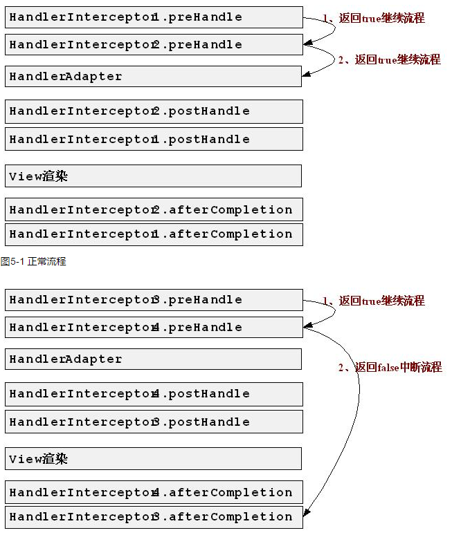

SpringWebMVC的处理器拦截器，类似于Servlet开发中的过滤器Filter，用于处理器进行预处理和后处理。
应用场景
- 日志记录: 可以记录请求信息的日志，以便进行信息监控、信息统计等。
- 权限检查: 如登陆检测，进入处理器检测是否登陆，如果没有直接返回到登陆页面。
- 性能监控: 典型的是慢日志。
HandlerInterceptor
|
|
拦截器适配器HandlerInterceptorAdapter
有时候我们可能只需要实现三个回调方法中的某一个，如果实现HandlerInterceptor接口的话，三个方法必须实现，不管你需不需要，此时spring提供了一个HandlerInterceptorAdapter适配器（种适配器设计模式的实现），允许我们只实现需要的回调方法。
|
|
这样在我们业务中比如要记录系统日志，日志肯定是在afterCompletion之后记录的，否则中途失败了，也记录了，那就扯淡了。一定是程序正常跑完后，我们记录下那些对数据库做个增删改的操作日志进数据库。所以我们只需要继承HandlerInterceptorAdapter，并重写afterCompletion一个方法即可，因为preHandle默认是true
运行流程

运行流程总结如下：
- 拦截器执行顺序是按照Spring配置文件中定义的顺序而定的。
- 会先按照顺序执行所有拦截器的preHandle方法，一直遇到return false为止，比如第二个preHandle方法是return false，则第三个以及以后所有拦截器都不会执行。若都是return true，则按顺序加载完preHandle方法。
- 然后执行主方法（自己的controller接口），若中间抛出异常，则跟return false效果一致，不会继续执行postHandle，只会倒序执行afterCompletion方法。
- 在主方法执行完业务逻辑（页面还未渲染数据）时，按倒序执行postHandle方法。若第三个拦截器的preHandle方法return false，则会执行第二个和第一个的postHandle方法和afterCompletion（postHandle都执行完才会执行这个，也就是页面渲染完数据后，执行after进行清理工作）方法。（postHandle和afterCompletion都是倒序执行）
正常流程Demo
|
|
|
|
|
|
|
|
输出结果：
post和after是倒序的！！！！
中断流程Demo
将SyslogInterceptor3的preHandle方法返回false。其他不变，再看输出结果
|
|
发现没有了post，post方法一个都没有输出。不仅如此，你的主程序代码（xxx.controller的一个接口）都不会被执行，所以只要遇到return false，则直接进行after清理工作，post和自己主程序代码都将被略过